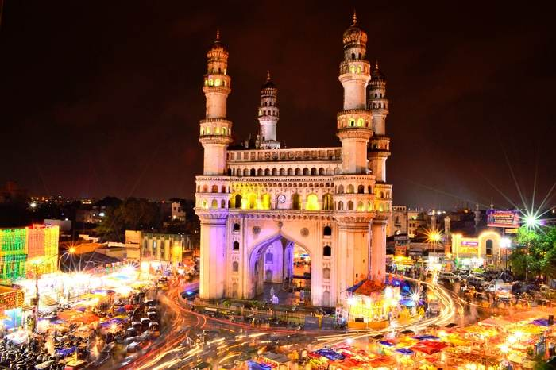
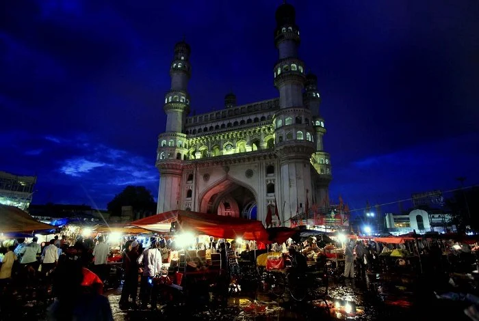
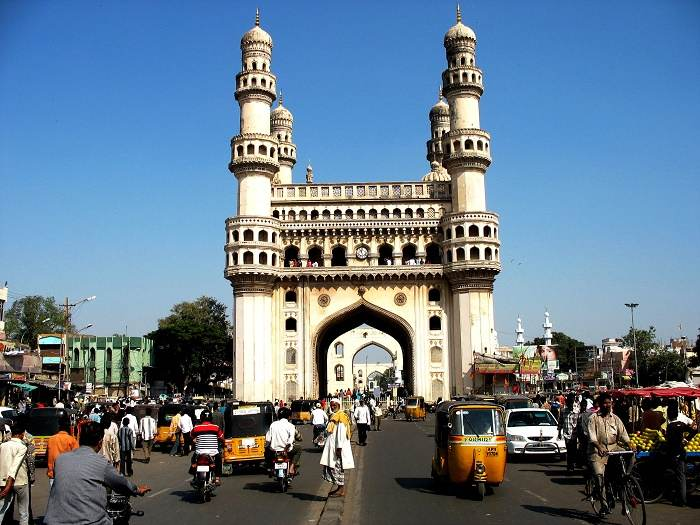
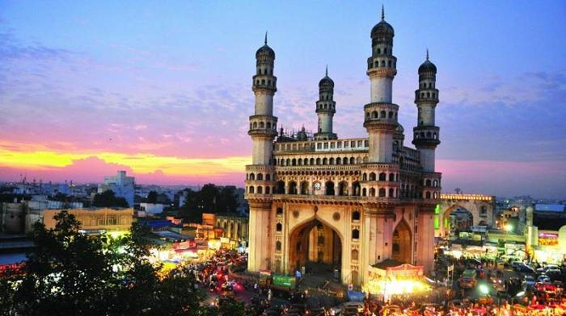

Charminar
The exact meaning of Charminar, as mentioned earlier, is a combination of two Urdu words: "Char" meaning four and "Minar" meaning tower. So, Charminar literally translates to "four towers" in English.
When was it built: 1591 CE
Who built it: Muhammed Quli Qutb Shah, the 5th Sultan,
Qutub Shahi Dynasty
Time taken: Approximately 1 year
where is it located: , Telengana, India
Why was it built: To commemorate the end of the plague.
Dimension: The base is square, each side 20m in width.
Four arches on each side are 11m wide and 20 m in height.
The four minarets stand at a height of 56m from the plinth.
Materials used: Granite and Lime-mortar
Architectural Style: Islamic
Visit Timing: 9:30 AM to 5:30 PM, all days of the week
Entry Fee: Rs. 5 for Indian Nationals/ Rs. 100 for
Foreign nationals
How to Reach: Charminar is well-connected by road to
all parts of the city.
Multiple TSRTC buses connect the monument with key
railway and bus stations.
Autos are readily available from all parts of the city.
Situated bang in the heart of the old city of Hyderabad, the Charminar (Urdu ‘Char’ meaning Four and ‘Minar’ meaning Tower) is one of the most recognized monuments in India. It is the architectural icon for the city of Hyderabad, equivalent to the likes of the Taj Mahal of Agra or the Eiffel Tower of Paris and is the most searched historical site of the city on Google. The imposing monument stands regally tall amidst the colorful bangle shops in the labyrinthine Laad Bazar of the old city and presents a beautiful glittering sight after nightfall (7pm-9pm). It is currently maintained by the Archeological Survey of India. The Charminar is situated on the eastern banks of Musi River with the Makka Masjid, another famous Qutub Shahi architecture, in the vicinity.

HISTORY
This 400-years-old structure was built by Sultan Muhammed Quli Qutb Shah, the 5th Sultan of the illustrious Qutb Shahi dynasty. An inseparable part of the history of Hyderabad, the Sultan built the monument right after shifting his capital from Golkonda to Hyderabad. Historians opine that the inadequacy of water and plague forced Quli Qutub Shah to construct a new city. He prayed to the Almighty to end his people’s suffering and pledged to build a mosque at the very site where he prayed. Another legend says that the Sultan saw his beloved, the beautiful Baghmati, at this very site and built the monument as a symbol of his eternal love for her. Though this legend gained popularity, it seems inaccurate when tallied with historical dates. In addition, the couplets inscribed during laying of the foundation stone translate as “Fill this of mine city with people as You have filled the river with fishes O Lord.”, indicating that the construction was concurrent with founding of the city.

Structure & Architecture
The Charminar was built at the intersection of the historical trade route connecting the markets of Golkonda with the port city of Machhilipatnam. The city of Hyderabad was designed with the Charminar at its center, spread around in four quadrants along the four cardinal directions. Mir Momin Astarabadi of the Qutb Shahi dynasty played an important role and ordered extensive preparations for the design and layout along with that of the new capital city. Architects from Persia were invited to provide additional designs and suggestions.
Inspired by the shapes of Shiya Tazias built to commemorate the tragic death of Prophet Muhammed’s grandson, Hussain at the battle of Karbala, the structure of the Charminar is perfectly square, with each side measuring 20m. The four grand arches open into four different streets and stand 11m wide. The square structure accommodates four minarets in each corner. The minarets are 56 meters high, house two balconies, and are topped with small delicate domes and intricate carvings on the outside walls. Unlike other prominent Islamic monuments, the minarets are built into the main structure. Inside the minarets there is a spiral staircase with 149 steps and 12 landings. The structure is a fine example of Indo-Islamic architecture with ample Persian influences. While arches and the domes show the influence of Islamic architecture, the minarets reflect Persian influence. The delicate stucco floral ornamentations on the ceiling, the balconies and the outside walls speak of Hindu influences.

Owing to its architectural similarity, Charminar is often called “Arc de Triomphe of the East”.
The second floor of the structure houses the oldest mosque of the city. It is located on the western side of the roof. The eastern part served as the court at the time of Sultan Qutb Shah. There are two galleries inside the Charminar - one over the other. The main gallery has 45 musallah or prayer spaces opening up to an uncovered space that may accommodate more people during Friday prayers.
Four clocks were added along the four cardinal directions in 1889. The small Vazu in the middle of the courtyard with a small fountain provides water for Ablution for Muslims offering prayer in the Mosque.
Legend has it that an underground tunnel connects the Charminar with the Golkonda fort. According to rumors, the tunnel was built to help the kings and queens escape to safety during a siege. These speculations have not been confirmed till date since the existence of any such tunnel has not been reported.